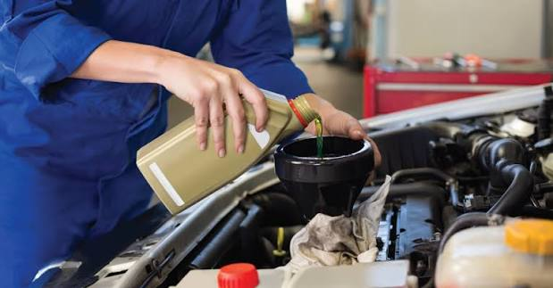

Sua oficina mecânica de confiança!
Oferecemos soluções completas em manutenção preventiva e corretiva com equipe altamente qualificada.
Trabalhamos com transparência e tecnologia para garantir a máxima segurança do seu carro em cada viagem.
Excelência, transparência e alta performance para o seu veículo.
Oferecemos soluções completas em manutenção preventiva e corretiva com equipe altamente qualificada.
Trabalhamos com transparência e tecnologia para garantir a máxima segurança do seu carro em cada viagem.

Substituição do óleo lubrificante e dos filtros de óleo, ar e combustível para proteger o motor, reduzir o atrito e manter o rendimento ideal do veículo.

Revisão completa do sistema de travamento com troca de pastilhas, discos, lonas e fluido de freio. Garantia de frenagem precisa e segurança total ao dirigir.

Ajuste da geometria da suspensão e calibração das rodas. Evita o desgaste irregular dos pneus, elimina vibrações e garante maior estabilidade na direção.

Avaliação e substituição de amortecedores, molas, pivôs, bieletas e buchas. Essencial para absorver impactos e garantir conforto e estabilidade em qualquer piso.

Escaneamento computadorizado dos módulos eletrônicos e da injeção. Identifica falhas ocultas no sistema com agilidade e extrema precisão técnica.

Limpeza do radiador e aplicação do fluido aditivado na proporção correta. Protege o motor contra o superaquecimento e previne danos severos ao cabeçote.
| Serviços | Troca de Óleo | Manutenção de freios | Alinhamento e balanceamento das rodas | Reparo de suspensão | Diagnóstico eletrônico | Revisão do sistema de arrefecimento |
|---|---|---|---|---|---|---|
| Valores | R$ 250,00 | R$ 200,00 | R$ 150,00 | R$ 400,00 | R$ 250,00 | R$ 300,00 |
| Duração | 30 a 60 minutos | 1 a 2 horas | 30 a 60 minutos | 2 a 4 horas | 30 a 60 minutos | 1 a 2 horas |